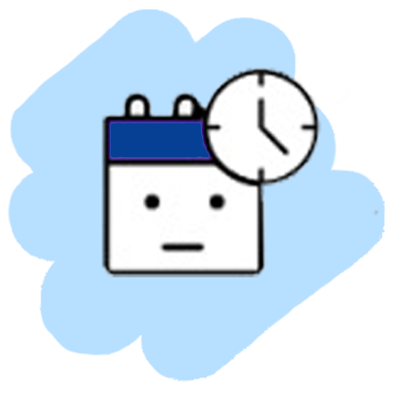

<ion-header translucent>
  <ion-toolbar color="primary">
    <ion-buttons slot="start">
      <ion-button (click)="dismiss()">
        <ion-icon  slot="icon-only" name="close"></ion-icon>
      </ion-button>
    </ion-buttons>
    <ion-title>Surveys</ion-title>
  </ion-toolbar>
</ion-header>

<ion-content>
  <ion-grid class="ion-margin-vertical" >

    <div *ngIf="resolve() == 'surveys'">
      <div *ngFor="let survey of surveys" >
        <ion-card>
          <ion-card-header>
            <ion-card-title>
              {{survey.title}}
              <ion-icon class="checkmark_icon" *ngIf="survey.response_list[0]" name="checkmark-circle"></ion-icon>
              <ion-icon class="close_icon" *ngIf="!survey.response_list[0]" name="close-circle"></ion-icon>
            </ion-card-title>

          </ion-card-header>
          <ion-card-content>
            {{survey.description}}
          </ion-card-content>
          <ion-footer >
            <ion-row class="ion-justify-content-center">
              <div>
                <ion-icon name="star" *ngFor="let num of getRange(survey.star_number)"  (click)="rate(num , survey)"
                          [ngStyle]="{'color' : getColor(num , survey.response_list)}">

                </ion-icon>
              </div>
            </ion-row>

          </ion-footer>
        </ion-card>
      </div>
    </div>

    <ion-row *ngIf="resolve() == 'nosurveys'" class="ion-justify-content-center ion-align-items-center not-found-row">
      <ion-col size="7" class="ion-text-center" >
        
        <h4>No Survey Found !!</h4>
      </ion-col>
    </ion-row>

  </ion-grid>
</ion-content>
